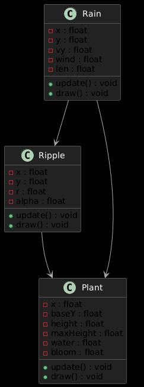
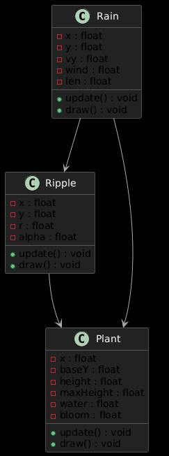

📊 System Diagram
The system below models Rain, Ripple, and Plant objects and their interdependent behaviors.
This project visualizes how rainfall nourishes existing flowers — helping them grow upward and bloom. Through interaction, users can influence the environment by adjusting rainfall intensity.
The system below models Rain, Ripple, and Plant objects and their interdependent behaviors.
